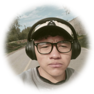
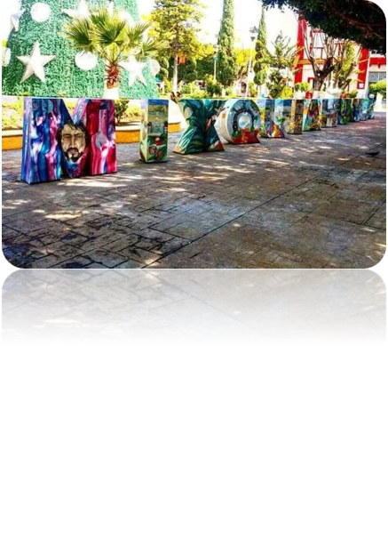
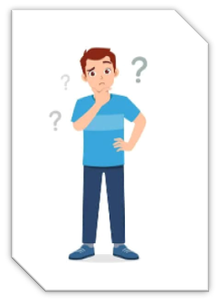
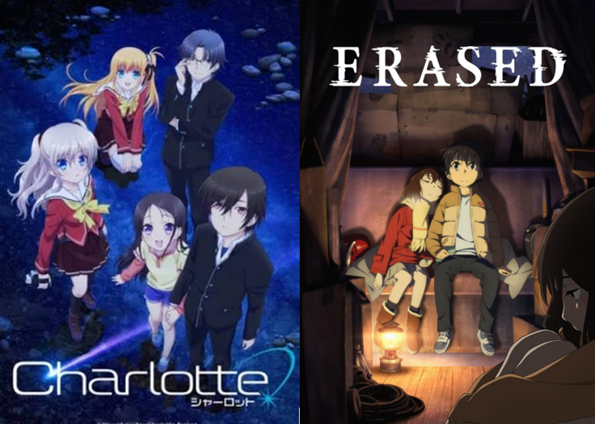
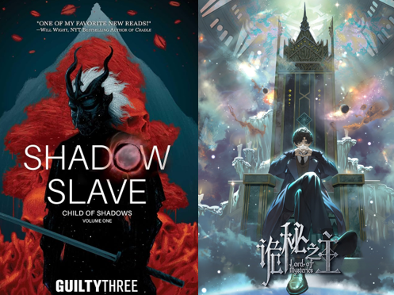
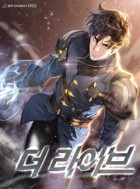
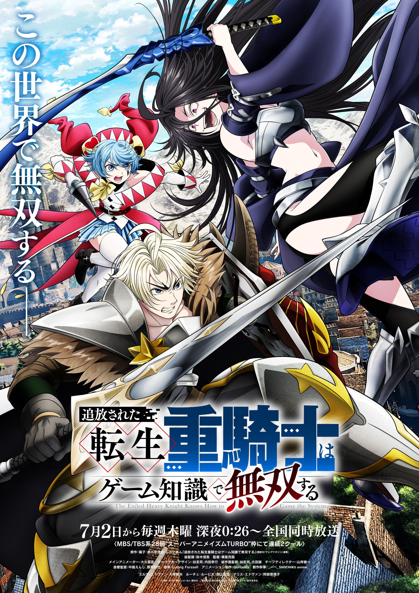

Soy Leo. Me considero una persona sumamente resiliente que nunca ha perdido la curiosidad ni la pasión por aprender. Desde muy niño, enfrentar diversas situaciones de salud me enseñó a valorar la libertad y el movimiento, lo que hoy me hace ser muy disciplinado y requerir orden en mi entorno para poder enfocarme. Aunque a veces me cueste expresar afecto de forma convencional, valoro profundamente a las personas que me han respaldado. Hoy en día, soy alguien que encontró en el gimnasio, en la nutrición y en el aprendizaje constante un verdadero estilo de vida.

De Mixquiahuala.

Mi camino hasta aquí no fue lineal. Durante mucho tiempo mi proyecto de vida estuvo enfocado en el seminario, impulsado por una profunda fe y por una promesa de gratitud que hice en mi infancia. Sin embargo, una grave lesión de rodilla y la posterior cirugía me obligaron a pausar mi vida por completo. Durante esos meses de rehabilitación tuve el tiempo y el silencio necesarios para confrontar mis dudas y replantear mi futuro con honestidad. Comprendí que elegir un rumbo distinto no borra mi gratitud hacia quienes me apoyaron tanto, sino que es un paso de congruencia personal. Elegí TICs porque las computadoras fueron mi refugio en mis etapas más difíciles, y hoy tengo la convicción de reconstruir mis conocimientos y dedicarme a esto en el ITSOEH.




